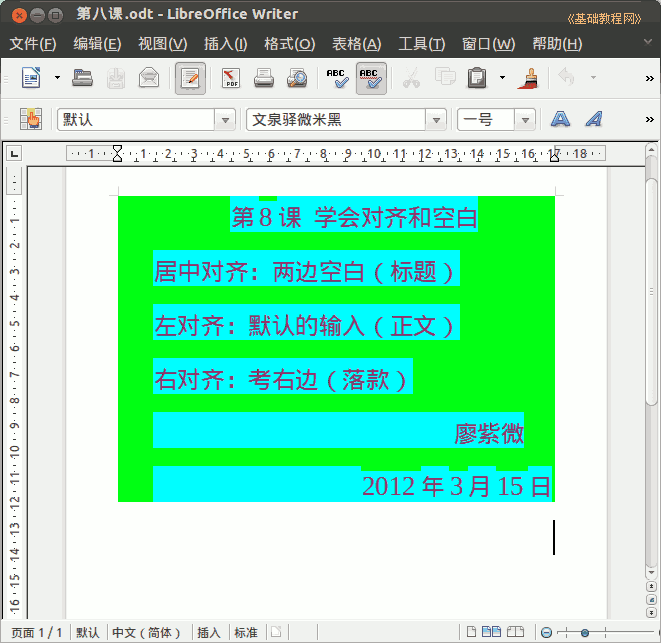

2011-2012 第二学期七年级文字处理和网页教学设计
作者：TeliuTe 来源：基础教程网
八、学会对齐和空白 返回目录 下一课
（一）教学设计
1、学习目标：学会 writer 里的对齐方式
2、注意事项：落款那儿可以用字段把自己的用户名插入进来
3、教学过程：
1）教师准备学案和板书；
2）学生整队进入，开机抄黑板上笔记；
3）教师讲解板书演示操作；
4）学生打指法、日志、完成操作；
5）教师打勾记录学生指法成绩，检查日志和操作；
注：学生抄完笔记就开始打指法、日志，老师讲完后再继续完成；
（二）板书设计(学生笔记)
第8课 学会对齐和空白
居中对齐：两边空白（标题）
左对齐：默认的输入（正文）
右对齐：靠右边（落款）[用插入字段的方法]
刘老师
2012.3.15
操作图示：

（三）课后记 2012-03-15 17:13
下午七年级的课，学习对齐和空白，有一个班说要调课，不知道还能不能上
===
内容设计的少一些，种类较多给学生发挥的空间
做的很快，基本都可以完成至少一项
--
准备把指法练习加大些，恢复到原来的数量
现在还是上学期的91个字符，等熟悉了就好
--
上完感觉累的，精力不够了还是怎的
按理与用液晶的比CRT要好得多了
--
发现吃东西的立刻制止，提前先扼杀了免得后面生气
把重点的关注对象盯紧，出现苗头立刻训斥不能留情
--
开始收取损坏鼠标垫的赔偿，查不出来是谁弄坏的，就一起赔
结果，那俩班让全班赔了，其实只要坐那两个机子的同学，囧..
--
学生有猜出别人登录密码的，也好，这样自己就懂要关注密码了
基本上所有学生都有自己的账号了，个别进不了的也可以有空指点
--
用火狐和Lwriter会卡住打不开，注销了都不行
只好关机，下次试试删除.配置文件看行不行
--
要求点一下然后就等着，没检查之前先最小化，检查完了再关
关机之前先关闭Lwriter，否则下次会出现恢复提示或者卡住
--
讲黑板上的知识没好好听，主要后面还要操作
所以满不在乎的，不过后面都可以做出来
--
不要求一笔一画的一模一样，做出来就可以了
最后的落款，实在插不进去就输入好了，打不出来的字放个别字也行，别卡着
--
演示的时候输入一些内容，用五笔打字看得学生眼花缭乱
这个要有空也可以写篇指导让学生自己试试
--
好的及时表扬，漂亮的让其他同学也看下，虽然没多少看也可以当作表扬
值日表光忘记记，上次的课上到最后忘记布置值日，想什么去了也不知是
--
返回目录 下一课
本教程由86团学校TeliuTe制作|著作权所有
基础教程网：http://teliute.org/
美丽的校园……
转载和引用本站内容，请保留版权信息和本站链接。